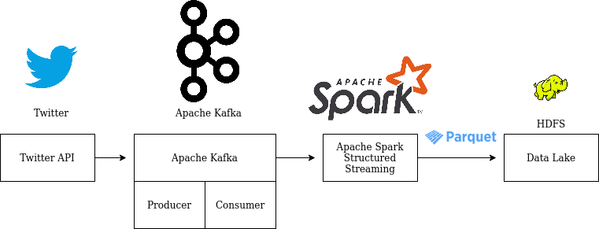

Dump Tweet data into Data Lake¶
Requirements¶
Come up with Data Lake
Listen to Twitter streams, collect tweets that talk about
Data Science/AI/Machine Learning/Big Dataand dump into bronze lake.
Implementation¶
Get API Credentials from Twitter Developement Site
Setup Tweepy to read Twitter stream filtering tweets taht talks about
Data Science/AI/Machine Learning/Big DataCreate Kafka topic for twitter stream
Dump the tweets from Tweepy into Kafka topic
Use Spark Structured Streaming to read the Kafka topic and store as parquet in HDFS
Use HDFS command line ot verify the data dump
We have a data lake setup as follows on our HDFS, basically boils down to HDFS paths:
Bronze Lake : Raw data i.e tweets
Silver Lake : Preprocessed data like running some kind of NLP stuff like Nammed Entity Recoginition (NER), cleansing etc.,
Gold Lake : Data Ready for web application / dash board to consume
Below is the data flow path:
Twitter API -> Kafka Producer -> Kafka Server -> Spark Structured Streaming with Kafka Consumer -> Parquet Sink -> Bronze Lake

How to run?¶
There are two ways of running, that is on docker or on your local machine. In either case, opening the terminal is the difference, once the terminal is launched, the steps are common.
To get a new terminal for our docker instance run : docker exec -it $(docker ps | grep sparkstructuredstreaming-pg | cut -d' ' -f1) bash
Note: We pull our container run id with $(docker ps | grep sparkstructuredstreaming-pg | cut -d' ' -f1)
This example needs three terminals:
Producer bin/data/start_kafka_producer.sh
Twitter API -> Kafka Producer -> Kafka Serversrc/ssp/spark/streaming/consumer/twiteer_stream_consumer_main.py
Consumer bin/data/dump_raw_data_into_bronze_lake.sh
Spark Structured Streaming with Kafka Consumer -> Parquet Sink -> Bronze Lakesrc/ssp/spark/streaming/consumer/twiteer_stream_consumer_main.py
spark-submitis used to run the application.Which submits the application to Spark master, if the application has SparkSession in it, then it will be considered as Spark Application and the cluster is used to run the application
Since cluster is involved in our example, we need to specify the number of cores, memory needed and maximum cores for our application, which is exported just before the spark-submit command in the shell script file.
Also the extra packages need for the application is given as part of the submit config
HDFS
Command line tool to test the parquet file storage
cd /path/to/spark-streaming-playground/ # Local machine
cd /host # On Docker 'spark-streaming-playground' is mountes as a volume at /host/
#[producer] Guake terminal name!
bin/data/start_kafka_producer.sh
#[visualize]
bin/data/visulaize_raw_text.sh
#[consumer]
bin/data/dump_raw_data_into_bronze_lake.sh
#[hdfs]
hdfs dfs -ls /tmp/ssp/data/lake/bronze/delta/
Take Aways / Learning’s¶
Understand how to get an Twitter API
Learn to use Python library Tweepy to listen to Twitter stream
http://docs.tweepy.org/en/latest/streaming_how_to.html
Understand to use Apache Kafka topic
sudo /opt/binaries/kafka/bin/kafka-topics.sh --create --zookeeper localhost:2181 --replication-factor 1 --partitions 20 --topic ai_tweets_topic
Dumping the data to Kafka topic : TweetsListener
Define
KafkaProducerwith Kafka master urlSend the data to specific topic
Using Spark Structured Streaming to read Kafka topic
Configuring the read stream
Defining the Schema as per Twitter Json schema
Using Spark Structured Streaming to store streaming data as parquet in HDFS
View the data with HDFS commands